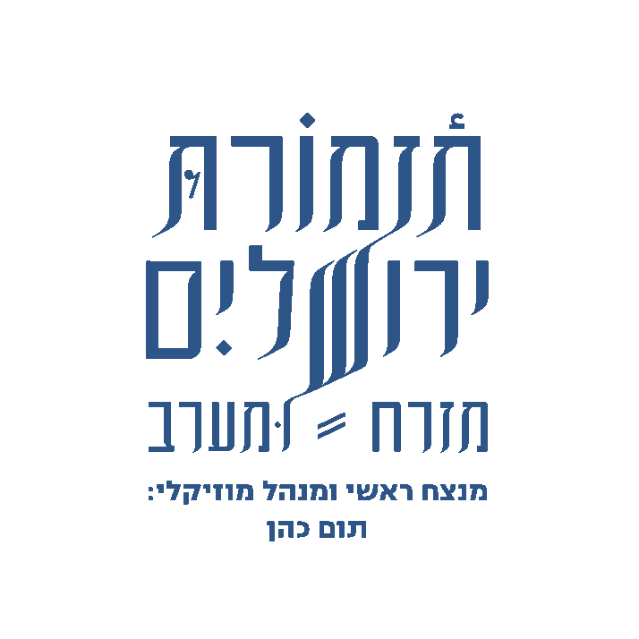

Primary roundel · light variant
Cream circle, navy wordmark. Default use on the terracotta brand field. Includes the conductor credit lockup (Tom Cohen). Minimum print size 18mm; minimum screen size 72px.
assets/logo-light.png